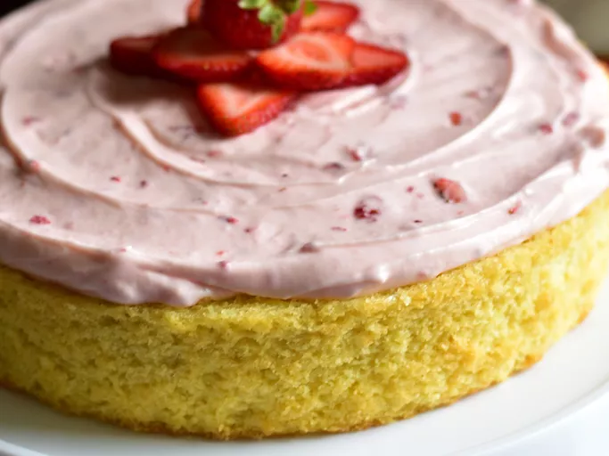

Vanilla Cake Recipe

Description
Ingredients
- Cooking spray
- 2 ⅔ cups all-purpose flour
- 1 cup white sugar
- 1 tablespoon baking powder
- 1 tablespoon vanilla extract
- 2 pinches salt
- 3 large eggs
- ¾ cup milk
- ¾ cup vegetable oil
Steps
- Preheat the oven to 350 degrees F (175 degrees C).
- Grease a 9-inch cake tin with cooking spray and line with parchment paper.
- Mix flour, sugar, baking powder, vanilla extract, and salt together in a large bowl.
- Add eggs, milk, and vegetable oil; mix by hand or beat with an electric mixer on low speed until cake batter is smooth. Pour into the prepared pan.
- Bake in the preheated oven until a toothpick inserted into the center of the cake comes out clean, about 45 minutes to an hour.
- Cool on a wire rack for 5 minutes. Run a table knife around the edges to loosen. Invert cake carefully onto a cooling rack and let cool completely before frosting with your favorite frosting.
Back to Home